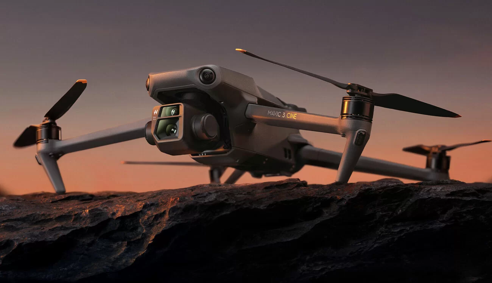
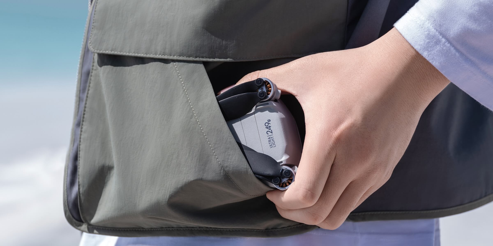
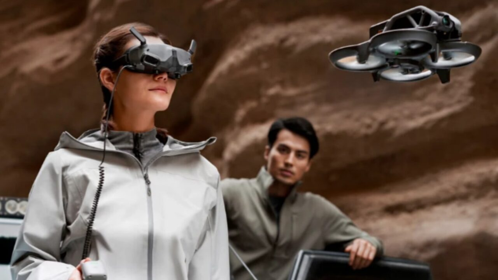

5.
Acquista il tuo drone
Scegli il tuo drone in base alle tue esigenze e preferenze , ecco a te alcuni :
DJI MAVIC PRO 3

il DJI Mavic 3 è uno dei droni più avanzati e completi sul mercato, ideale
per i professionisti della fotografia e del video aerei che desiderano ottenere immagini di alta
qualità con un'ampia gamma di funzionalità avanzate.
Il DJI Mavic 3 ha molte funzionalità avanzate, tra cui una fotocamera ad alta risoluzione da 20 megapixel con
un sensore CMOS da 1 pollice, un sistema di evitamento degli ostacoli a 6 direzioni, una batteria con maggiore
durata e un raggio di volo più ampio, Inoltre, ha un nuovo sistema di propulsione con motori più potenti e silenziosi,
che permette di volare a velocità più elevate e di affrontare condizioni meteorologiche difficili.
Acquista
DJI MINI 3

Il DJI Mini 3 ha un peso di soli 249 grammi, il che lo rende uno dei droni più leggeri sul mercato e
lo esclude dall'obbligo di registrazione presso le autorità dell'aviazione civile in molti paesi ed Inoltre non obbliga il possesso del patentino.br/>
Nonostante il peso ridotto, il drone è dotato di una fotocamera 4K stabilizzata su 3 assi, è dotato di una
serie di funzionalità avanzate, tra cui l'ActiveTrack, che consente di seguire oggetti o persone in movimento,
e il QuickShots, che permette di registrare video aerei professionali con pochi semplici tocchi.
Acquista
DJI FPV AVATA

Il DJI FPV Avata è dotato di un sistema di trasmissione video digitale a bassa latenza che consente al pilota di vedere in tempo reale quello che il drone sta registrando
attraverso gli occhiali DJI FPV.
In questo modo, il pilota può immergersi completamente nell'esperienza di volo in prima persona e godere di una prospettiva completamente nuova.
Il DJI FPV è anche dotato di funzionalità avanzate di sicurezza, come la funzione Emergency Brake and Hover, che consente di fermare immediatamente il drone in caso di emergenza,
e la funzione di rilevamento degli ostacoli, che consente al drone di evitare gli ostacoli in volo.
Acquista